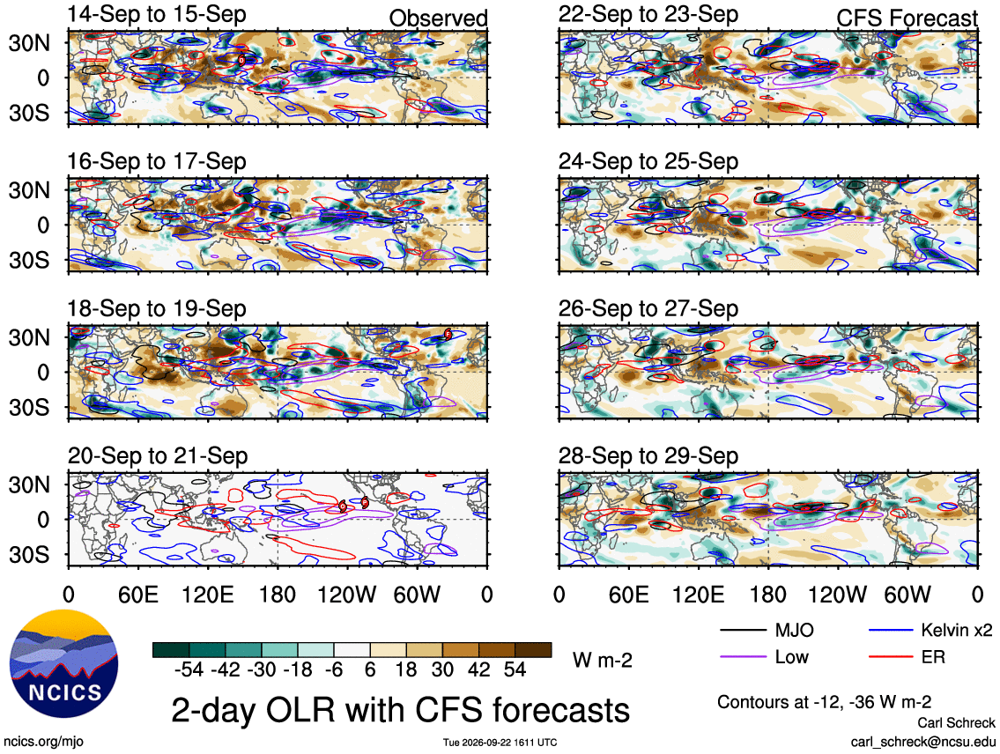
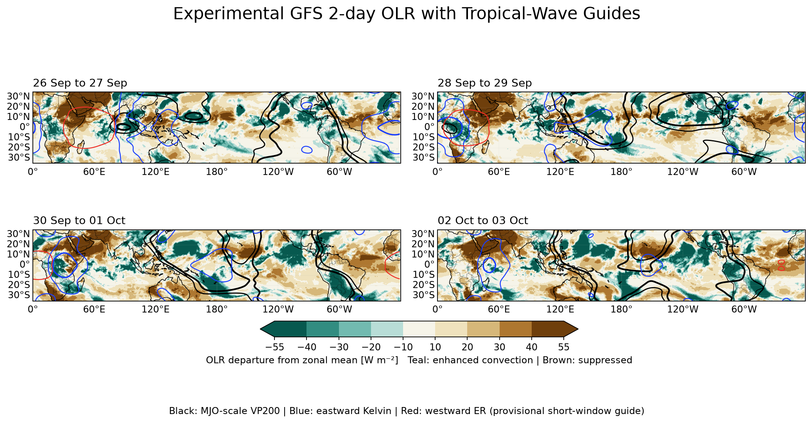
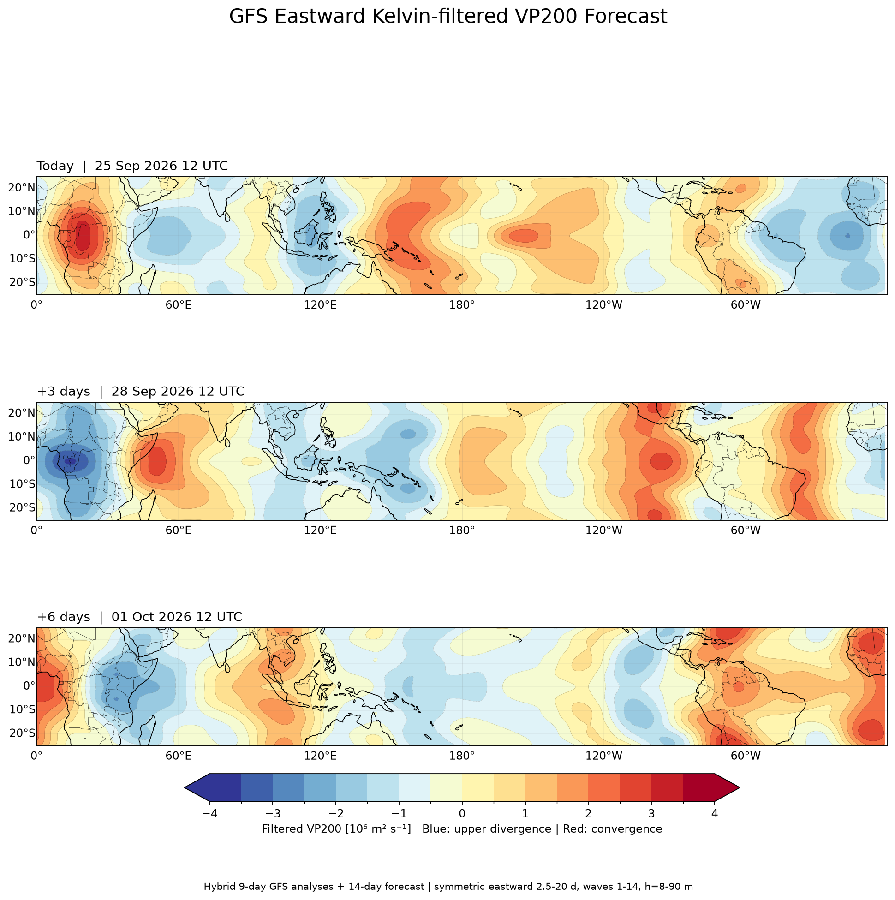
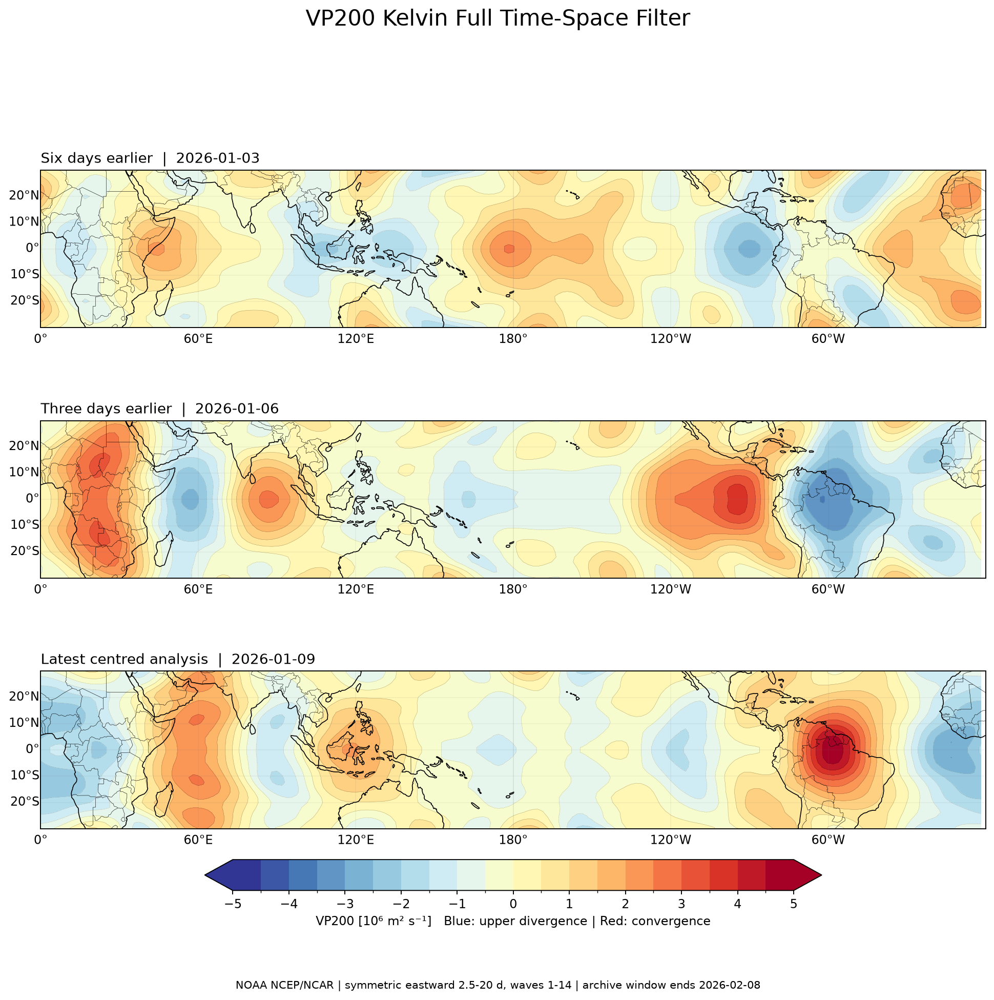

شذوذ جهد السرعة VP200 غير المفلتر
تشخيص عالمي عند 200 hPa بعد طرح مناخ 1991–2020 وإزالة المتوسط النطاقي لعزل الإشارة المتحركة طوليًا. الأزرق والبنفسجي يدلان على تشتت علوي ودعم للحمل الحراري، والأحمر على تقارب علوي وقمع نسبي.

OLR وVP200 وMJO وKelvin والهوفمولر
تشخيص عالمي عند 200 hPa بعد طرح مناخ 1991–2020 وإزالة المتوسط النطاقي لعزل الإشارة المتحركة طوليًا. الأزرق والبنفسجي يدلان على تشتت علوي ودعم للحمل الحراري، والأحمر على تقارب علوي وقمع نسبي.
خريطة OLR محدثة كل يومين مع توقع CFS: الأسود MJO، والأزرق Kelvin، والأحمر موجات روسبي الاستوائية ER، والبنفسجي الخلفية منخفضة التردد. التظليل الأخضر المزرق يدل على نشاط سحابي ورطوبة، والبني على القمع والجفاف. المصدر: NCICS/NOAA.

منتجنا المحسوب من بيانات GFS في أربع فترات متتابعة، مدة كل منها يومان. التظليل التركوازي نشاط حمل حراري والبني قمع نسبي؛ الأسود نطاق MJO، والأزرق Kelvin المتجه شرقًا، والأحمر ER المتجه غربًا. إشارة ER دليل قصير المدى تجريبي وليست بديلًا عن الفلتر التاريخي الكامل.

ثلاث لوحات لليوم ومتوسط الأسبوع الأول والثاني، مع الاحتفاظ بالموجات النطاقية 1–5 لإظهار غلاف التشتت والتقارب واسع النطاق. هذا تشخيص MJO-scale وليس بعدُ مرشح 20–100 يوم الكامل.

فلتر زمني–مكاني اتجاهي شرقًا لفترات 20–100 يوم والموجات النطاقية 1–5. يعرض ثلاث مراحل أسبوعية، ويتأخر التاريخ الأخير عمدًا لأن الفلتر المركزي يحتاج بيانات حقيقية قبله وبعده.

فلتر Kelvin تشغيلي متجه شرقًا يجمع حتى 9 أيام من تحليلات GFS مع توقع 14 يومًا، ويعرض اليوم و+3 و+6 أيام مع الموجات 1–14 وقيد سرعة Kelvin الفيزيائية.

فلتر زمني–مكاني متجه شرقًا لفترات 2.5–20 يوم والموجات 1–14، مع قيد سرعة Kelvin المكافئة والمتناظرة حول خط الاستواء. التاريخ مركزي موثوق وليس توقعًا لليوم.

متوسط 15° جنوبًا–15° شمالًا لرصد حركة الكتلة المدارية. البنفسجي والأخضر يعنيان OLR منخفضًا وسحبًا عميقة/نشاطًا رطبًا، والبرتقالي والأحمر يعنيان قمعًا وجفافًا.

متوسط 5° جنوبًا–5° شمالًا. الأحمر يبرز الرياح الغربية المرتبطة بدفعات كلفن، والكنتورات السوداء عند +6 و+9 و+12 م/ث.